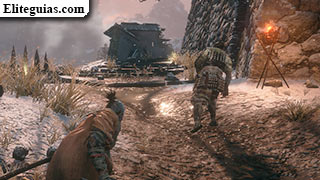
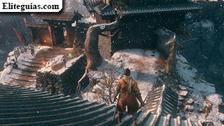
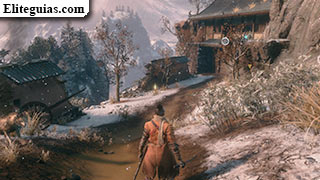
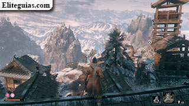
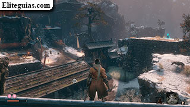
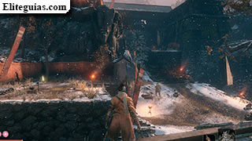
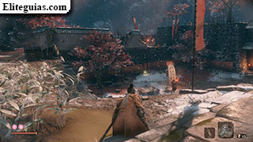
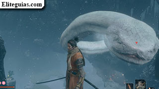
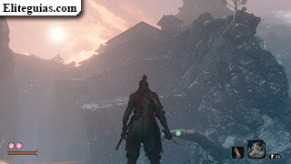
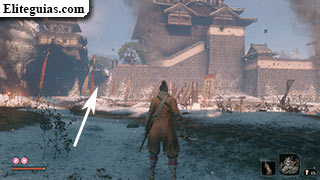

GUIA SEKIRO: SHADOWS DIE TWICE

Ahora es cuando empieza el juego de verdad, y lo que has visto hasta ahora es básicamente una especie de Prólogo...
Ya podrás usar tu prótesis de shinobi y su principal característica de Arpeo
,
además a partir de ahora los enemigos derrotados ya soltarán experiencia y Sen.
Pues bien, sal del Templo desolado por la puerta principal, atiende al tutorial de Arpeo que se te muestra en pantalla y ponlo en práctica, luego trepa por un pequeño muro y ya llegarás oficialmente a esta nueva zona de los Alrededores de Ashina. Engánchate a la siguiente rama y activa el Ídolo del escultor, momento en el que como es el segundo que has descubierto, ya podrás usar el viaje rápido.
Desde el ídolo, trepa hasta la parte superior y junto a una pequeña pared, encontrarás un Dulce de Ungo. Regresa al ídolo y sigue bajando hasta el nivel inferior, en donde te encontrarás al primer enemigo y de espaldas, así que aprovecha para encargarte de él por la espalda (acostúmbrate a esto siempre que puedas, tanto ahora como a lo largo de todo el juego).
Presta atención al tutorial sobre recoger el botín de los enemigos que aparecerá en pantalla...
resumiendo, mientras que para recoger un objeto simplemente tienes que pulsar el botón una vez,
para recoger el botín enemigo tienes que mantenerlo pulsado para absorver
dichos objetos.
Recoge la Gragea y un Fragmento de cerámica. Entonces elimina a los dos guardias un poco más adelante y engánchate al tejado sobre el portón, desde ahí engánchate a la zona elevada de la derecha y encárgate del guardia que está allí.
Engánchate a lo alto del tejado de la casa y desde allí, primero ve a por el guardia de la derecha y recoge un Fragmento de cerámica en la esquina. Desde aquí, acércate al borde y con mucho cuidado (por que no te podrás enganchar para quedar colgado), déjate caer a la parte inferior y dentro de una pequeña cueva encontrarás un Dulce de Ako.
Ahora regresa a la parte de arriba y encárgate de los enemigos junto a la puerta, teniendo en cuenta una mecánica muy importante del juego, que es atacar a los enemigos desde arriba antes de que te descubran, y algo que en Eliteguias te recomendamos que te acostumbres a hacer desde YA siempre que tengas oportunidad. Para ello, estando en una posición superior, centra la vista en un enemigo, salta sobre él y cuando estás en el aire verás que su "punto" se pone de color rojo, así que pulsa en ese momento el botón de ataque y ya lo eliminarás al instante.
Tras eliminar a esos dos enemigos, encárgate también del que está por la zona de la hierba en dirección opuesta a la puerta. Por esa zona de la hierba encontrarás un Dulce de Ungo, y junto a la puerta donde estaban los enemigos, habrá Puñado de cenizas y Gragea.
Al otro lado de la puerta te encontrarás con un par de perros y aunque suene raro, también podrás desviar sus ataques. En cualquier caso, en una zona elevada ahí mismo tienes el ídolo del escultor Muro exterior - Camino. Algo importante a tener en cuenta es que para activarlos vasta con simplemente examinarlos, sino lo necesitas no es necesario que descanses en ellos, ya que eso es lo que hace que reaparezan de nuevo todos los enemigos de la zona.
Por la parte inferior donde estaban los perros encontrarás un Fragmento de cerámica, y si subes a la parte superior desde el ídolo, te encontrarás con un enorme gallo al que podrás eliminar.
Por ahora, entra en el nivel intermedio de esa casa y recoge la Rueda de shuriken. Entonces, antes de continuar vamos a volver al Templo desolado para equiparte con la nueva herramienta Shuriken cargado hablando con el Escultor. Además, a partir de ahora ya podrás comprar Emblemas espirituales en los Ídolos del Escultor.
Cuando estés listo, regresa al punto de control del muro exterior
y
ve hasta el otro lado del portón pasada la zona de los perros.
Pero en lugar de ir directo hacia adelante,
súbete al tejado y pasa a la zona elevada a la izquierda para recoger una Gragea.
Y desde aquí acércate al minijefazo General Naomori Kawarada para enfrentarte a él.
Tras el combate, regresa a donde habías recogido la última Gragea y salta al bordillo de abajo... es una altura considerable y perderás vida, pero si tienes la barra a tope no morirás, así que tranquilo/a. Con esto estarás frente a una cueva en la que encontrarás el objeto Figurita jizo envuelta.
Ahora, para salir de aquí tendrás que usar un ídolo de regreso, al menos para llevar cierto orden en la guía. En cualquier caso, vuelve donde te enfrentaste con el úlimo mini-jefazo y recoge el Puñado de cenizas x2 en un lateral, luego súbete al tejado de la puerta cercana para continuar.
Trepa hasta lo alto de la torre cercana y espera a que se junten dos guardias en la zona inferior, entonces salta a la rama cercana (usa el gancho para llegar) y espía su conversación desde allí.
Ahora viene la parte complicada, que será limpiar la zona de enemigos, así que ten en cuenta lo siguiente:
Con la zona finalmente despejada, en el piso inferior de la casa donde estaba uno de los enemigos con rifle conseguirás una Esfera Mibu de riquezas, en el piso intermedio un Fragmento de cerámica, y finalmente en el tejado, un Monedero ligero.
Cuando termines, ve hacia el fondo donde espiaste inicialmente a los guardias y continúa bajando por el camino a la izquierda hasta llegar a una casa en la que hay una mujer, la Madre de Inosuke Nogami, así que habla con ella para que te de la Campana protectora del joven señor, que sirve para acceder a la nueva zona de Hacienda Hirata, aunque eso vamos a dejarlo para más adelante.
Por ahora, rompe las cajas del piso inferior para acceder a una sala en la que hay Monedero ligero x3 y por la parte exterior te esperan 2 gallos. Al subir por la rampa cercana te encontrarás con el hijo de la anciana, Inosuke Nogami, así que habla también con él.
En lugar de seguir recto desde donde está Inosuke, da media vuelta por la rampa de la izquierda hasta el punto donde estaba uno de los enemigos con rifle (el de la casa no, el otro) y déjate caer con cuidado por el bordillo a una zona de hierba en la que encontrarás Dulce de Gachiin x3.
Ahora ve por la rampa y desde su extremo salta al otro lado. Entonces ve trepando por los salientes y por los tejados hasta llegar a donde está el enemigo del cañón pero pudiendo acercarte a él por la espalda (si hubieras venido de frente esto sería un gran problema). Al matarlo soltará Pólvora negra.Desde aquí aprovecha para eliminar uno a uno a los enemigos de la parte inferior, empezando por el que tiene un rifle y está junto al portón cerrado. Dicho portón está cerrado pero no importa por que podrás pasar al otro lado saltando por el tejado y en el suelo encontrarás Gragea x2.
Antes de continuar, este es el momento ideal para encontrarte con el mercader Oferentes del Lecho del Cuervo (en su sección ya te damos más detalles).
Sube por esas escaleras y yendo de frente, déjate caer a la rama de justo debajo. Engánchate a la siguiente y desde ella salta a tierra firme. Según vienes, ve a la derecha y junto a la montaña encontrarás un par de Emblemas espirituales y también Esfera Mibu de posesiones x2 (cada una en un montón distinto). Date media vuelta y, mirando hacia el pedrusco, engánchate a la siguiente parte superior enfrente y a la derecha para conseguir Hierro x1.
Da media vuelta por donde viniste hasta las escaleras y sigue subiendo por ellas. Súbete al tejado sobre el portón que está junto a la hoguera para ir a la siguiente zona
.
Para empezar, ve a la derecha, acaba con el gallo y sube hasta donde está el Ídolo del Escultor Muro exterior - Escaleras.
Al examinarlo ya verás un minitutorial sobre la mejora de VIT y postura, solo eso, por que por el momento no tendrás la cantidad necesaria para ninguna mejora.
Ahora nosotros vamos a aprovechar para un pequeño viaje al Templo desolado.
Regresa al último ídolo del escultor, salta a donde está el gallo y déjate caer por la derecha. Acércate a las luces rojas y aparte de conseguir un Emblema espirituale, y habla con esos espíritus, o Vestigios como se les conoce en el juego para escuchar una conversación. Mirando hacia los vestigios, date media vuelta y en el lado opuesto encontrarás a Anayama el buhonero, así que habla con él.
Súbete al tejado donde están los vestigios y salta a la zona elevada para conseguir una Gragea. Entonces súbete al siguiente tejado y espía la conversación de esos dos guardias, tras lo cual deberás acabar con ellos. Entonces prepárate para enfrentarte al jefazo Ogro encadenado.
Cuando logres vencerlo, ve a la zona donde estaba el guardia más cercano a él y recoge una Esfera Mibu de riquezas. Ahora trepa al edificio tras donde estaba el ogro y métete por la apertura en la pared. Justo delante de ti tienes un Monocular nictibio y por la izquierda encontrarás 1 Semilla de calabaza y 1 Fragmento de cerámica.
Ahora sal para afuera para enfrentarte al minijefazo General Tenzen Yamauchi, aunque antes, tal y como te explicamos en su correspondiente sección, deberías limpiar el patio de guardias. Cuando acabes con él no te olvides de recoger el Hierro justo detrás de donde estaba inicialmente.
Si pasas por el portón abierto del patio llegarás al minijefazo Decapitado, pero aquí te recomendamos que lo dejes para más adelante, ir ahora a por él no sería muy buena idea... en su correspondiente sección de la guía ya te explicamos la razón y te damos más detalles.
Así que en lugar de ir por ahí, da media vuelta y ve por la parte alta por donde habías eliminado al primer guardia antes de enfrentarte al General. Al llegar al puente destruido, baja a la parte inferior, pero ten cuidado por que hay un lagarto venenoso... tras eliminarlo recoge Gragea x2 y luego baja hasta el ídolo del Escultor Valle bajo el puente para activarlo.
Salta a la siguiente plataforma tras el ídolo, recoge un Emblema espirituale y sigue descendiendo.
Tras utilziar el Arpeo aéreo
tal y como te indican en pantalla
(ya que sino no podrás alcanzar ciertos puntos, aunque seguramente ya lo habías hecho hasta ahora incluso aunque no hiciera falta)
te encontrarás con una enorme serpiente...
Por ahora no puedes hacer nada, así que aunque cueste, olvídate de ella y ve todo lo rápido que puedas hasta entrar en una cueva,
en la que te encontrarás 2 Emblemas espirituales.
Al salir por el otro lado usa las paredes para cubrirte y esperar el momento oportuno para saltar hacia la zona de hierba. Entonces espera a que la serpiente retroceda y ve hacia la pared de la izquierda, donde puedes pegarte a ella.
Deslízate por el bordillo desde dicha pared y al otro lado métete en el palanquín
(la peqeña choza).
Una vez escondido allí, espera a que se acerque la serpiente y pulsa el botón de ataque para dañarla.
Aprovecha (pero con cuidado por que aún podrá dañarte con las sacudidas) para subir por la rampa, todo recto según sales de la choza, y recoger Semilla despertadora x5. Entonces da media vuelta y avanza trepando por una rama y enganchándote en los salientes hasta llegar a una cueva, por la que tienes que subir hasta salir al exterior.
Cuando salgas de la cueva, utilza el gancho para llegar hasta el otro lado, pero antes de subir del todo, junto a las murallas del castillo, recoge 1 Dulce de Ako.
No subas todavía por la muralla, en lugar de eso ve a la derecha (mirando hacia dicha muralla) y trepa por allí para encontrarte con el ídolo del Escultor Fortaleza del Castillo de Ashina y recoge Dulce de Gachiin junto a él.
Por ahí cerca hay un enano con sombrero
que al matarlo soltará un Recorte de catálogo de hierbas.
Salta por la muralla por donde está el ídolo y entonces sube hasta el tejado de la torre que está ahí mismo para espiar una conversación. Ahora vamos a despejar el patio, como siempre a ser posible con sigilo, teniendo en cuenta que habrá un par de enemigos con rifle, un gordito con maza y... por si no te habías dado cuenta, sí, también podrás hacer eliminaciones directamente estando colgado de un bordillo cuando un enemigo pasa justo por encima de ti.
Cuando ya no quede nadie, detrás de la casa donde estaba uno de los guardias con rifle encontrarás Dulce de Ungo, y debajo de ésta, Fragmento de cerámica, Esfera Mibu de riquezas x3 y un Monedero pesado. Finalmente acércate a las luces rojas que están en lo alto para encontrar un vestigio de Kuro y Genichiro.
Desde ahí pasa por el hueco de la muralla pero cuando el guardia pase de largo, de manera que puedas eliminarlo por la espalda. Luego ve a la derecha y espía al guardia que está frente a su caballo muerto, tras lo cual podrás eliminarlo; junto a él hay Puñado de cenizas x2. Sube por las escaleras que están ahí mismo y encontrarás Gragea x2. La puerta de al lado está cerrada por ese lado, así que nada.
Da media vuelta hasta la apertura de la muralla y ve por el lado opuesto. Trepa por el árbol, de ahí al tejado y finalmente al siguiente patio para enfrentarte no a un mini, sino a un jefazo de verdad, Gyobu Oniwa, al acercarte a donde está Puñado de cenizas x2.
Cuando consigas derrotarlo, acércate al ídolo del Escultor Puertas del Castillo Ashina junto al portón que verás claramente al fondo del campo de batalla y verás un tutorial en pantalla indicándote que ya puedes mejorar el poder de ataque usando los recuerdos de los jefazos. Considera este momento para hacer una visita al Templo desolado y ver lo de la mejora de herramientas y demás con el Escultor.
De vuelta al castillo, todavía no pases por el portón junto al ídolo... estando de espaldas, sube por las escaleras del lado opuesto y gira a la derecha para recoger un Fragmento de cerámica. Luego sube por las siguientes escaleras ahí mismo para encontrarte con un individuo llamado Oferentes del campo de batalla y recibir tan solo con eso el logro/trofeo Oferentes. De entre las cosas que vende, aparte de la semilla, es de especial interés el Barrenos de Robert, que sirve para conseguir la herramienta de prótesis Barrenos de shinobi.
Baja las escaleras y ahora entra en el edificio por la puerta que ya está abierta. Allí dentro te encontrarás con Tengu, así que habla con él. Recoge Gragea x2 y tras la pared te encontrarás con una puerta que podrás desbloquear para crear así un atajo.
Sube al segundo piso por las escaleras para recoger un Monedero ligero, luego utiliza el gancho para subir por las vigas de madera hasta lo más alto, en donde encontrarás un cofre con una Cuenta de oración.
Pues bien, si pasas por el portón junto al último ídolo del Escultor, llegarás al Castillo Ashina, pero nosotros vamos a completar la zona de Hacienda Hirata, que ya estaba disponible desde hace un buen rato.
Hay un lugar oculto en Alrededores de Ashina, pero aunque técnicamente pertenezca a esta zona, tan solo se puede acceder desde el Valle sumergido